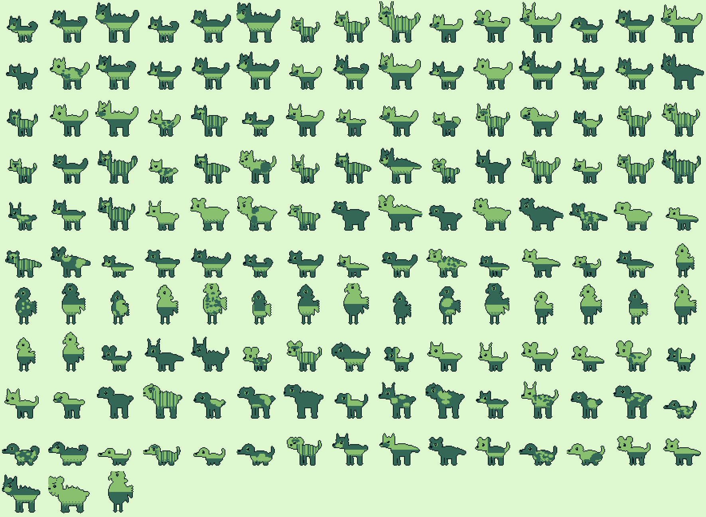

Static snapshot, refreshed by hand at each phase boundary. Regenerate the sprite sheet with
npm run forge:sheet; re-read live status with npm run gauntlet.
| # | Gate | Status |
|---|---|---|
| 1 | types | PASS |
| 2 | schema | PASS |
| 3 | sim | 38 fails |
| 4 | curve | not written |
| 5 | playthrough | written, not green |
| 6 | visual | not written |
| 7 | tone | not written |
| 8 | ship | not written |
Only npm run gauntlet exiting 0 counts as finished.
| median battle length | 6 turns (was 1) |
| p10 / p90 | 3 / 12 |
| turn-cap timeouts | 0 / 10000 |
| max turn time | under 5 ms ceiling |
| failures | 17 move · 15 species · 2 starter · 3 type |
Median went 1 → 6 by fixing three real defects: extreme archetype weights (atk/def ~2:1), a 120-power ceiling on every movepool, and a missing Struggle that let PP exhaustion stall a battle forever.
| edge | win rate |
|---|---|
| Winter beats Plato | 90.3% |
| Plato beats Baloo | 80.3% |
| Baloo beats Winter | 58.7% |
Cycle is correct and decisive; the edges are uneven, so aggregates are not yet
50/50. Diagnosed in BLOCKERS.md item 2 — the lever is defensive
typing, not stats.
| gym | house | type | lvl |
|---|---|---|---|
| 1 Harrowfen | Vantry | Fang | 12 |
| 2 Saltmere | Calloway | Tide | 18 |
| 3 Ashgrove | Ashgrove | Ember | 24 |
| 4 Briarhold | Thistle | Thorn | 29 |
| 5 Kestrelbridge | Wren | Wing | 34 |
| 6 Blackmourne | Mourne | Gloom | 39 |
| 7 Whitlow | Sable | Frost | 44 |
| 8 Brackhall | Brack | Maw | 49 |
| Elite Four | Cross-Fen | — | 52–58 |
| Champion (Cass) | — | — | 60–62 |
Monotonic by construction. gauntlet:curve not yet written to prove it.
| creatures | 153 (150 + 3 legendary) |
| moves | 96 (8 per type) |
| maps | 52 |
| trainers | 47 |
| dialogue | 81 keys · 305 boxes |
| orphan moves | 0 |
| pup | 237–287 | |
| adult | 367–418 | |
| apex | 497–547 | |
| legendary | 594–627 |
| 1 | Status moves below the 35% floor — structural: a setup turn cannot repay its tempo in a 6-turn battle. |
| 2 | Starter aggregates uneven — speed and defensive typing, not stats. |
| 3 | Concurrent agents clobbering shared files. One writer per file. |
Full diagnoses in BLOCKERS.md. Do not re-derive them.

Every sprite generated from its species seed: family skeleton, then ears, muzzle, tail, build and coat pattern. Three critic passes so far — proportions were a blob, apex horns read as rabbit ears (now dorsal spines), and dark coats collapsed into their own outline (shade 3 is now reserved for outline, eye and nose). Browse them named at forge.html.